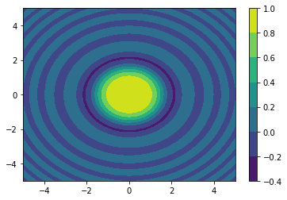

Numpy tutorial
Contents
Numpy tutorial#
Array manipulation in Python
Reference#
Scipy official reference: http://docs.scipy.org/
Scipy Lecture notes: http://www.scipy-lectures.org/
Python Data Science Handbook: https://jakevdp.github.io/PythonDataScienceHandbook/
Python course .eu: https://www.python-course.eu/numpy.php
Call the function#
np.func(a, x, y) is the same as a.func(x, y).
Convention#
The common short name for numpy is np.
import numpy as np
np.__version__
'1.23.1'
Creating an array from a sequence#
array(seq), asarray(seq)#
seq can be a tuple, list, or a numpy array.
asarray() does not make a new copy if seq is already a numpy array.
Creating a 1D numpy array from a list.
Array basics#
a.ndim: number of dimensionsa.shape: Tuple of lengths for each dimensiona.size: total size (product of shape) =len(a)a.dtype: data typea[i]: accessing i th element in the 1D array (start from 0)a[i, j]: accessing element i th row, j th column (2D array, start from 0)a[:, j]: accessing j th column(2D array)a[i, :]: accessing j th row (2D array)a.T: Transpose ofaa.copy(): make a copy of a that does not share memorya.reshape(shape): reshape the array if the new size is compatible (i.e. the same total size)
a = np.array([1, 9, 8, 7])
a
array([1, 9, 8, 7])
a.ndim
1
a.shape
(4,)
a.size
4
a.dtype
dtype('int64')
a[3]
7
For complex numbers, j being the imaginary part.
np.array([1+2j, 3+4j, 5+6*1j]).dtype
dtype('complex128')
Creating a multidimensional array from a nested list , with complex numbers
b = np.asarray([[0.0, 1.0, 2.0], [3.0, 4.0, 5.0+1j]])
b
array([[0.+0.j, 1.+0.j, 2.+0.j],
[3.+0.j, 4.+0.j, 5.+1.j]])
b.ndim
2
b.shape
(2, 3)
b.dtype
dtype('complex128')
b[1, :]
array([3.+0.j, 4.+0.j, 5.+1.j])
b[:, 0]
array([0.+0.j, 3.+0.j])
b.T
array([[0.+0.j, 3.+0.j],
[1.+0.j, 4.+0.j],
[2.+0.j, 5.+1.j]])
b.reshape((3, 2))
array([[0.+0.j, 1.+0.j],
[2.+0.j, 3.+0.j],
[4.+0.j, 5.+1.j]])
b.reshape((1, -1)) # -1 mean caculate dim automatically
array([[0.+0.j, 1.+0.j, 2.+0.j, 3.+0.j, 4.+0.j, 5.+1.j]])
Creating an array from a function#
arange(start, stop, step)linspace(start, stop, num, endpoint=True)logspace(start, stop, num, endpoint=True)ones((d1, d2, ...))ones_like(arr)zeros((d1, d2, ...))zeros_like(arr)full((d1, d2, ...), val)eye(k)diag(seq)fromfunction(f, (d1, d2, ...))fromiter(iter)meshgrid(x1, x2, ...)
np.arange(10, 0, -1)
array([10, 9, 8, 7, 6, 5, 4, 3, 2, 1])
np.linspace(0, 1, 5)
array([0. , 0.25, 0.5 , 0.75, 1. ])
np.linspace(0, 1, 5, endpoint=False)
array([0. , 0.2, 0.4, 0.6, 0.8])
np.logspace(-10.0, 10.0, 11)
array([1.e-10, 1.e-08, 1.e-06, 1.e-04, 1.e-02, 1.e+00, 1.e+02, 1.e+04,
1.e+06, 1.e+08, 1.e+10])
np.ones((3, 3))
array([[1., 1., 1.],
[1., 1., 1.],
[1., 1., 1.]])
a = np.arange(5.0)
print(np.ones_like(a))
[1. 1. 1. 1. 1.]
np.full((3, 4), 42)
array([[42, 42, 42, 42],
[42, 42, 42, 42],
[42, 42, 42, 42]])
np.full_like(a, 69)
array([69., 69., 69., 69., 69.])
np.eye(3)
array([[1., 0., 0.],
[0., 1., 0.],
[0., 0., 1.]])
np.diag([4, 5, 6, 7])
array([[4, 0, 0, 0],
[0, 5, 0, 0],
[0, 0, 6, 0],
[0, 0, 0, 7]])
np.fromfunction(lambda i, j: i >= j, (4, 4))
array([[ True, False, False, False],
[ True, True, False, False],
[ True, True, True, False],
[ True, True, True, True]])
np.fromiter((x*x for x in range(5)) , dtype=np.float)
/tmp/ipykernel_453/1740782668.py:1: DeprecationWarning: `np.float` is a deprecated alias for the builtin `float`. To silence this warning, use `float` by itself. Doing this will not modify any behavior and is safe. If you specifically wanted the numpy scalar type, use `np.float64` here.
Deprecated in NumPy 1.20; for more details and guidance: https://numpy.org/devdocs/release/1.20.0-notes.html#deprecations
np.fromiter((x*x for x in range(5)) , dtype=np.float)
array([ 0., 1., 4., 9., 16.])
import numpy as np
import matplotlib.pyplot as plt
x = np.linspace(-5, 5, 100)
y = np.linspace(-5, 5, 100)
# sparse=True to save some memory
xx, yy = np.meshgrid(x, y, sparse=True)
print('xx =', xx, sep='\n')
print('yy =', yy, sep='\n')
plt.contourf(x,y, np.sin(xx**2 + yy**2) / (xx**2 + yy**2))
plt.colorbar()
xx =
[[-5. -4.8989899 -4.7979798 -4.6969697 -4.5959596 -4.49494949
-4.39393939 -4.29292929 -4.19191919 -4.09090909 -3.98989899 -3.88888889
-3.78787879 -3.68686869 -3.58585859 -3.48484848 -3.38383838 -3.28282828
-3.18181818 -3.08080808 -2.97979798 -2.87878788 -2.77777778 -2.67676768
-2.57575758 -2.47474747 -2.37373737 -2.27272727 -2.17171717 -2.07070707
-1.96969697 -1.86868687 -1.76767677 -1.66666667 -1.56565657 -1.46464646
-1.36363636 -1.26262626 -1.16161616 -1.06060606 -0.95959596 -0.85858586
-0.75757576 -0.65656566 -0.55555556 -0.45454545 -0.35353535 -0.25252525
-0.15151515 -0.05050505 0.05050505 0.15151515 0.25252525 0.35353535
0.45454545 0.55555556 0.65656566 0.75757576 0.85858586 0.95959596
1.06060606 1.16161616 1.26262626 1.36363636 1.46464646 1.56565657
1.66666667 1.76767677 1.86868687 1.96969697 2.07070707 2.17171717
2.27272727 2.37373737 2.47474747 2.57575758 2.67676768 2.77777778
2.87878788 2.97979798 3.08080808 3.18181818 3.28282828 3.38383838
3.48484848 3.58585859 3.68686869 3.78787879 3.88888889 3.98989899
4.09090909 4.19191919 4.29292929 4.39393939 4.49494949 4.5959596
4.6969697 4.7979798 4.8989899 5. ]]
yy =
[[-5. ]
[-4.8989899 ]
[-4.7979798 ]
[-4.6969697 ]
[-4.5959596 ]
[-4.49494949]
[-4.39393939]
[-4.29292929]
[-4.19191919]
[-4.09090909]
[-3.98989899]
[-3.88888889]
[-3.78787879]
[-3.68686869]
[-3.58585859]
[-3.48484848]
[-3.38383838]
[-3.28282828]
[-3.18181818]
[-3.08080808]
[-2.97979798]
[-2.87878788]
[-2.77777778]
[-2.67676768]
[-2.57575758]
[-2.47474747]
[-2.37373737]
[-2.27272727]
[-2.17171717]
[-2.07070707]
[-1.96969697]
[-1.86868687]
[-1.76767677]
[-1.66666667]
[-1.56565657]
[-1.46464646]
[-1.36363636]
[-1.26262626]
[-1.16161616]
[-1.06060606]
[-0.95959596]
[-0.85858586]
[-0.75757576]
[-0.65656566]
[-0.55555556]
[-0.45454545]
[-0.35353535]
[-0.25252525]
[-0.15151515]
[-0.05050505]
[ 0.05050505]
[ 0.15151515]
[ 0.25252525]
[ 0.35353535]
[ 0.45454545]
[ 0.55555556]
[ 0.65656566]
[ 0.75757576]
[ 0.85858586]
[ 0.95959596]
[ 1.06060606]
[ 1.16161616]
[ 1.26262626]
[ 1.36363636]
[ 1.46464646]
[ 1.56565657]
[ 1.66666667]
[ 1.76767677]
[ 1.86868687]
[ 1.96969697]
[ 2.07070707]
[ 2.17171717]
[ 2.27272727]
[ 2.37373737]
[ 2.47474747]
[ 2.57575758]
[ 2.67676768]
[ 2.77777778]
[ 2.87878788]
[ 2.97979798]
[ 3.08080808]
[ 3.18181818]
[ 3.28282828]
[ 3.38383838]
[ 3.48484848]
[ 3.58585859]
[ 3.68686869]
[ 3.78787879]
[ 3.88888889]
[ 3.98989899]
[ 4.09090909]
[ 4.19191919]
[ 4.29292929]
[ 4.39393939]
[ 4.49494949]
[ 4.5959596 ]
[ 4.6969697 ]
[ 4.7979798 ]
[ 4.8989899 ]
[ 5. ]]
<matplotlib.colorbar.Colorbar at 0x7f0e8f2a1690>

Random#
The new API: https://numpy.org/doc/stable/reference/random/index.html?highlight=random#module-numpy.random
from numpy.random import default_rng
rng = default_rng()
rng.random()
0.6546340877372672
# Uniform [0, 1)
rng.random((4, 3))
array([[0.12108085, 0.60282062, 0.40612089],
[0.28503606, 0.85103168, 0.28448747],
[0.05497597, 0.3524177 , 0.66749156],
[0.58865977, 0.68380723, 0.99273728]])
# Integers
rng.integers(1, 7, (10, 20))
array([[6, 3, 4, 4, 6, 1, 5, 3, 2, 5, 2, 3, 4, 6, 3, 2, 5, 4, 5, 5],
[6, 5, 1, 2, 1, 1, 3, 1, 5, 3, 5, 5, 2, 2, 4, 2, 5, 3, 1, 3],
[5, 6, 4, 2, 5, 6, 4, 4, 1, 4, 4, 1, 5, 1, 6, 6, 3, 2, 5, 3],
[2, 3, 3, 4, 4, 3, 2, 2, 5, 6, 4, 6, 6, 6, 6, 2, 5, 2, 4, 1],
[3, 6, 1, 4, 4, 2, 3, 3, 6, 4, 1, 4, 6, 1, 5, 1, 3, 1, 5, 2],
[6, 2, 2, 6, 3, 3, 1, 6, 4, 6, 3, 3, 2, 6, 6, 5, 6, 3, 1, 6],
[4, 2, 1, 1, 3, 1, 5, 6, 1, 1, 3, 3, 4, 5, 2, 5, 1, 5, 6, 5],
[6, 3, 4, 2, 6, 5, 3, 5, 4, 1, 5, 4, 1, 6, 6, 5, 6, 1, 3, 6],
[4, 5, 3, 3, 6, 5, 6, 1, 4, 5, 3, 1, 6, 1, 6, 4, 4, 3, 1, 1],
[2, 3, 3, 1, 4, 6, 3, 6, 3, 4, 6, 3, 2, 4, 2, 2, 5, 3, 5, 6]])
# Standard uniform distribution
rng.standard_normal(10)
array([ 1.1407946 , -0.98002198, 0.23975095, -2.27787072, -0.84139824,
-0.98816745, 0.47830551, 0.12000085, -0.23559643, -2.49412316])
# Random choice
choices = np.array(["one", "two"])
# Select by index
choices[rng.integers(0, 2, (3, 4))]
array([['one', 'one', 'one', 'two'],
['one', 'one', 'one', 'two'],
['one', 'one', 'two', 'two']], dtype='<U3')
# Or choice function, prob weights supported
rng.choice(choices, size=(5, 3), p=[0.3, 0.7])
array([['two', 'one', 'two'],
['one', 'two', 'two'],
['two', 'two', 'two'],
['two', 'one', 'two'],
['one', 'two', 'two']], dtype='<U3')
Selecting elements#
a = np.arange(10)
a
array([0, 1, 2, 3, 4, 5, 6, 7, 8, 9])
# a[idx]
a[0], a[3], a[7]
(0, 3, 7)
# a[[indices]]
a[[0, 3, 7]]
array([0, 3, 7])
# a[condition]
# Selection from an array of true/false value
a[a<5]
array([0, 1, 2, 3, 4])
# Slice: a[start:end:step]
a[1::2]
array([1, 3, 5, 7, 9])
# Reverse
a[::-1]
array([9, 8, 7, 6, 5, 4, 3, 2, 1, 0])
# Mutating the elements
a[0] = 1000
a
array([1000, 1, 2, 3, 4, 5, 6, 7, 8, 9])
Indexing for 2D / 3D arrays#
In 2D, the first dimension corresponds to rows, the second to columns. Numpy is row-major by default, as in C-styled arrays.
a[i, j] for the element from ith row and jth column.
b = np.arange(25).reshape((5,5))
b
array([[ 0, 1, 2, 3, 4],
[ 5, 6, 7, 8, 9],
[10, 11, 12, 13, 14],
[15, 16, 17, 18, 19],
[20, 21, 22, 23, 24]])
# Each index is separated by comma
b[2, 3]
13
# Slices share the same underlying object of the original.
c = b[1::2, 1::2]
c
array([[ 6, 8],
[16, 18]])
c[0, 0] = 666 # Mutates b !!!
print("After mutating:")
b
After mutating:
array([[ 0, 1, 2, 3, 4],
[ 5, 666, 7, 8, 9],
[ 10, 11, 12, 13, 14],
[ 15, 16, 17, 18, 19],
[ 20, 21, 22, 23, 24]])
np.may_share_memory(c, b)
True
# Use copy to prevent unwanted overwriting
a = np.arange(10)
c = a[::2].copy()
c[0] = 12
a
array([0, 1, 2, 3, 4, 5, 6, 7, 8, 9])
# combining assignment and slicing
a = np.arange(10)
a[5:] = 10
a
array([ 0, 1, 2, 3, 4, 10, 10, 10, 10, 10])
b = np.arange(5)
a[5:] = b[::-1]
a
array([0, 1, 2, 3, 4, 4, 3, 2, 1, 0])
Numerical operations on arrays#
Element-wise (broadcasting) operations by default.
Some math functions could be found in numpy (e.g. sin, cos): use
np.lookfor(desc.)Others could be found in scipy documentations.
a = np.arange(10)
a
array([0, 1, 2, 3, 4, 5, 6, 7, 8, 9])
a+1
array([ 1, 2, 3, 4, 5, 6, 7, 8, 9, 10])
a-3
array([-3, -2, -1, 0, 1, 2, 3, 4, 5, 6])
a*2
array([ 0, 2, 4, 6, 8, 10, 12, 14, 16, 18])
a/4
array([0. , 0.25, 0.5 , 0.75, 1. , 1.25, 1.5 , 1.75, 2. , 2.25])
2**a
array([ 1, 2, 4, 8, 16, 32, 64, 128, 256, 512])
With an array: Only if dimension sizes are compatible: either the same or 1.
a = np.array([[1, 2, 3, 4],
[5, 6, 7, 8]])
b = rng.random((2, 4))
a+b
array([[1.75206733, 2.7308536 , 3.80928314, 4.01544534],
[5.06083005, 6.66901894, 7.74616834, 8.54180918]])
a-b
array([[0.24793267, 1.2691464 , 2.19071686, 3.98455466],
[4.93916995, 5.33098106, 6.25383166, 7.45819082]])
a*b
array([[0.75206733, 1.4617072 , 2.42784942, 0.06178135],
[0.30415026, 4.01411366, 5.22317836, 4.33447343]])
a/b
array([[ 1.32966819, 2.73652616, 3.70698442, 258.97782182],
[ 82.19621476, 8.96835591, 9.38126112, 14.76534602]])
np.sin(b)
array([[0.68314994, 0.66750547, 0.72379272, 0.01544472],
[0.06079254, 0.62021672, 0.67883018, 0.5156869 ]])
a = np.array([1, 2, 3, 4])
b = np.array([4, 2, 2, 4])
a == b
array([False, True, False, True])
a = np.arange(1, 10)
b = np.arange(1, 8).reshape((-1, 1))
a
array([1, 2, 3, 4, 5, 6, 7, 8, 9])
b
array([[1],
[2],
[3],
[4],
[5],
[6],
[7]])
# Broadcasting: A(1*M) * B(N*1) = C(N * M)
a*b
array([[ 1, 2, 3, 4, 5, 6, 7, 8, 9],
[ 2, 4, 6, 8, 10, 12, 14, 16, 18],
[ 3, 6, 9, 12, 15, 18, 21, 24, 27],
[ 4, 8, 12, 16, 20, 24, 28, 32, 36],
[ 5, 10, 15, 20, 25, 30, 35, 40, 45],
[ 6, 12, 18, 24, 30, 36, 42, 48, 54],
[ 7, 14, 21, 28, 35, 42, 49, 56, 63]])
Matrix multiplication
dot(a, b), a@b
a = rng.random((5, 5))
b = rng.random((5, 5))
# Element-wise multiplication
a*b
array([[0.16697578, 0.9080055 , 0.14852887, 0.04879155, 0.01248314],
[0.62144076, 0.07477667, 0.04737039, 0.07646878, 0.05084151],
[0.6500475 , 0.00683417, 0.14758975, 0.10600169, 0.55089658],
[0.21383228, 0.08462928, 0.34724408, 0.03817496, 0.40436409],
[0.48724361, 0.15809144, 0.0965514 , 0.01731161, 0.57120285]])
# Matrix multiplication
a@b
array([[1.57401036, 1.6398299 , 0.61679486, 0.81463841, 1.09380284],
[1.49075518, 1.22133093, 0.97564551, 0.8292314 , 1.83013419],
[1.35198733, 1.55543084, 0.92571877, 0.86841662, 1.49305423],
[1.50405194, 1.7589264 , 0.62646251, 0.6920561 , 1.48335323],
[1.04821146, 1.48757976, 0.62786563, 0.65281752, 1.35904741]])
# Matrix multiplication
np.dot(a,b)
array([[1.57401036, 1.6398299 , 0.61679486, 0.81463841, 1.09380284],
[1.49075518, 1.22133093, 0.97564551, 0.8292314 , 1.83013419],
[1.35198733, 1.55543084, 0.92571877, 0.86841662, 1.49305423],
[1.50405194, 1.7589264 , 0.62646251, 0.6920561 , 1.48335323],
[1.04821146, 1.48757976, 0.62786563, 0.65281752, 1.35904741]])
# No need to transpose 1D array for `dot(a, b)`
a = rng.random((5, 5))
b = rng.random(5)
c = rng.random(5)
# Matrix x vector
np.dot(a,b)
array([1.54923819, 1.80712964, 1.2611806 , 0.88947007, 0.35069594])
# Vector * vector
np.dot(c,b)
1.629553391138705
Combing Arrays#
This one will give your headaches.
concatenate((a, b), axis=n)stack((a,b), axis=n)
The former joins arrays in the existing axis; the latter creates a new axis.
a = np.arange(0, 10)
b = np.arange(0, 10) + 10
# along the row (1st axis), existing axis
np.concatenate((a, b), axis=0)
array([ 0, 1, 2, 3, 4, 5, 6, 7, 8, 9, 10, 11, 12, 13, 14, 15, 16,
17, 18, 19])
# along the column (2nd axis)
np.stack((a, b), axis=1)
array([[ 0, 10],
[ 1, 11],
[ 2, 12],
[ 3, 13],
[ 4, 14],
[ 5, 15],
[ 6, 16],
[ 7, 17],
[ 8, 18],
[ 9, 19]])
Reduction#
sum(v, axis=n), cumsum(v, axis=n)
a = np.arange(0, 6).reshape((2, 3))
a
array([[0, 1, 2],
[3, 4, 5]])
np.sum(a)
15
np.sum(a, axis=1)
array([ 3, 12])
np.sum(a, axis=0)
array([3, 5, 7])
np.cumsum(a)
array([ 0, 1, 3, 6, 10, 15])
np.cumsum(a, axis=1)
array([[ 0, 1, 3],
[ 3, 7, 12]])
np.cumsum(a, axis=0)
array([[0, 1, 2],
[3, 5, 7]])
amin(v, axis=n)amax(v, axis=n)minimum(a, b)maximum(a, b)argmin(v, axis=n)argmax(v, axis=n)
np.amin(a)
0
np.argmin(a)
0
np.amax(a)
5
np.argmax(a)
5
b = (rng.standard_normal((2, 3)) + 1) * 5
b
array([[ 6.6436492 , 3.93790743, 6.03986792],
[-0.64124844, 3.3253692 , -1.44372566]])
np.minimum(a, b)
array([[ 0. , 1. , 2. ],
[-0.64124844, 3.3253692 , -1.44372566]])
np.maximum(a, b)
array([[6.6436492 , 3.93790743, 6.03986792],
[3. , 4. , 5. ]])
np.all([True, True, False])
False
np.any([True, True, False])
True